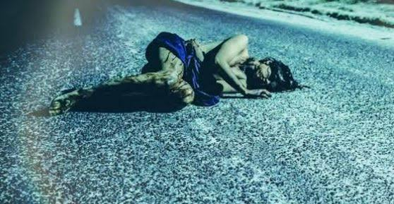

Arquivos Relacionados ao Caso Alison Botha
Vídeo 1: Entrevista com Alison Botha
Descrição: Alison Botha fala sobre sua experiência e detalhes do crime.
Vídeo 2: Reconstituição do Crime
Descrição: Reconstituição feita pela polícia baseada em evidências.
Foto 1: Local do Crime
Descrição: Cena do crime onde Alison Botha foi encontrada.
Foto 2: Culpados
Descrição: Evidências cruciais encontradas no local do crime.
Foto 2: Alison Botha
Descrição: O milagre da sobrevivência: Mesmo com o corpo coberto de sangue e os órgãos abdominais à mostra, ela conseguiu rastejar até a estrada para buscar ajuda. Surpreendentemente, os golpes na garganta haviam permitido que ela pudesse respirar, possibilitando sua luta pela sobrevivência.